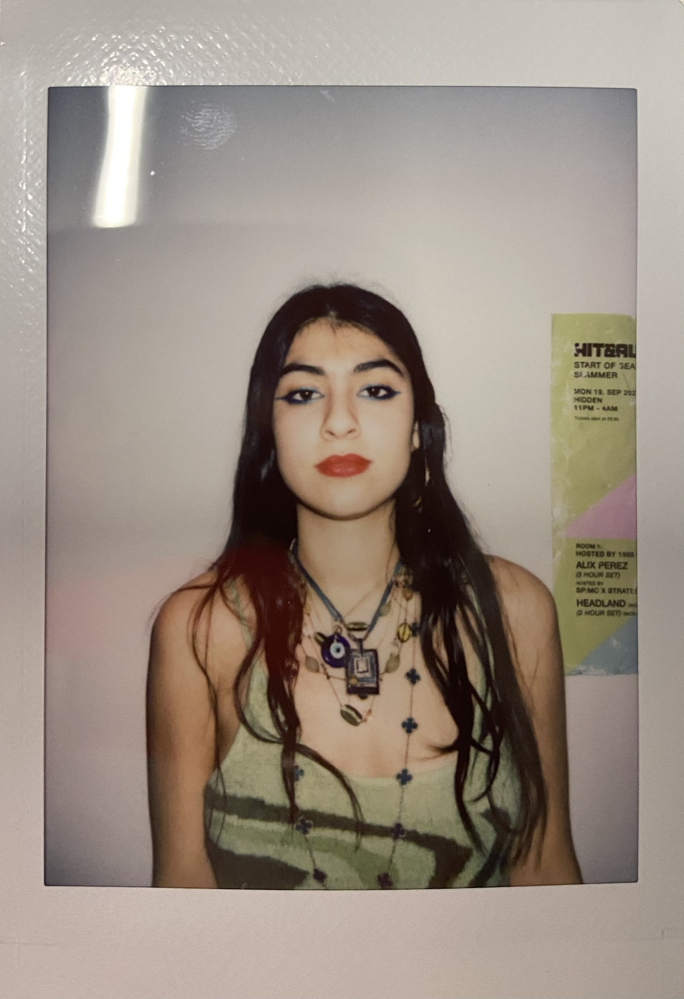

About
Stella Bagchi. Artist and scientist.
At first glance, my passion for art might seem disconnected from my fascination with chemistry. Not to me. Much like art, chemistry is a process underpinned by experimentation, mystery and beauty – where structure and chaos coexist to create something meaningful. I believe there has always been a beautiful balance between the sciences and art – one that is often overlooked.
Growing up in London in a multicultural household, my artistic influences were limitless. My father exposed me to the vibrancy of Indian aesthetics – where colour is woven into everyday life, from the rich hues of textiles to the powdered pigments of Holi. In contrast, my mother’s French heritage introduced me to a more understated artistic sensibility, where elegance lies in restraint, light and composition. And then there was London – a city of reinvention and endless creativity, where cultures collide in the best way possible. The interplay between these influences shaped my approach to art, allowing me to constantly reimagine my own creative language.
- LondonHome
- Arts University BournemouthUAL Foundation Diploma in Art and Design
- University of St AndrewsBSc in Chemistry and Mathematics
- Yale UniversityMBA
Contact
For commissions and collaborations, get in touch.
stellabagchi@gmail.com Instagram: @stellacreatesart